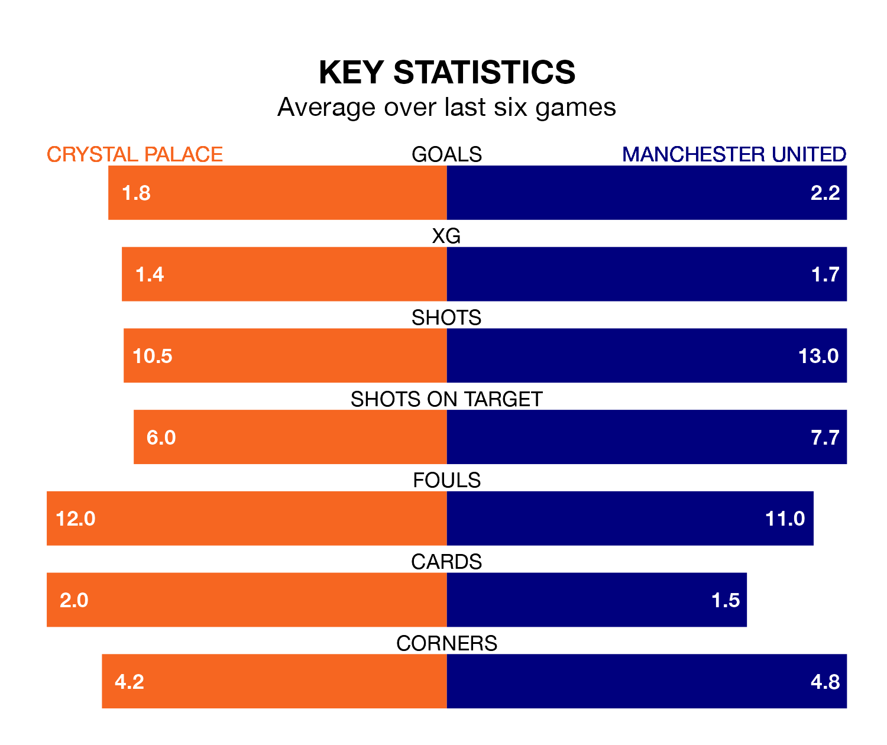

Crystal Palace host Manchester United on Monday at Selhurst Park in the Premier League.
In their last league match, on April 27, Palace drew with Fulham 1-1 away, with their goal scored by Jeffrey Schlupp.
United also drew, 1-1 at home against Burnley, with Antony Matheus scoring their goals.
In the last 10 years, Palace and United have played each other on 22 occasions. Palace won four of them, United 14, and they drew four times.
On average, the Eagles scored 0.7 goals and the Red Devils 1.6 in those matches.
Their last meeting was on September 30, when Palace won 1-0 away.
With 45 goals in 35 games so far this season, Palace are scoring at below the league average rate with 1.3 goals per game. And they are conceding at an average rate, letting in 57 goals at a rate of 1.6 per game.
United are also below average scorers, with 1.5 goals per game, compared to a league average of 1.6. They have also conceded 1.5 goals per game.
In André Onana, the Red Devils can rely on one of the league's safest pair of hands. He has kept eight clean sheets in his 34 appearances this season in the Premier League.
In the Eagles's net, Sam Johnstone has six clean sheets in 20 games.
The hosts are 15th in the table after 35 games, of which they have won 10 and drawn 10, earning 40 points.
The away team are nine places ahead of Palace in sixth, with 16 wins and six draws putting them on 54 points.
Palace are in mixed form in the Premier League, with three wins and a draw from their last six games.
With a win and four draws over that period, United's form is worse – they have taken seven points from 18, compared to the Eagles's 10.
Updated: 12:00 (UTC), 02/05/24